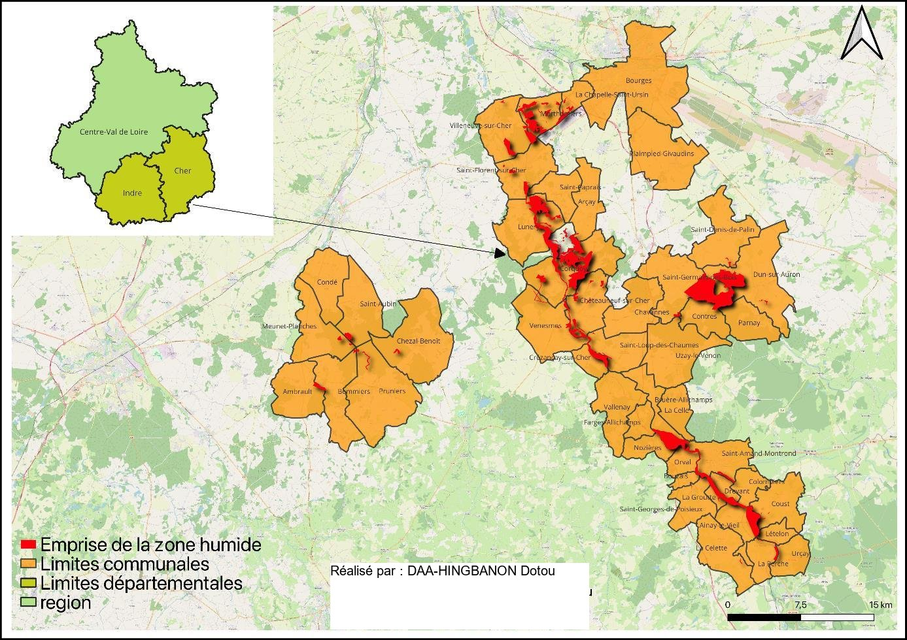
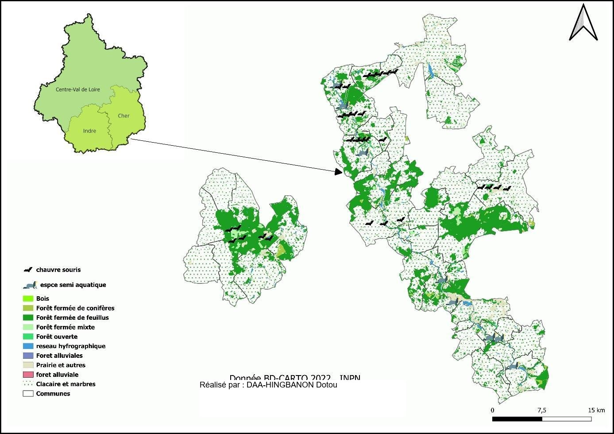

Géomatique, Limnologie, Environnement et Territoires · Université d'Orléans
Demande de labellisation Ramsar en Champagne berrichonne
Coteaux, bois et marais calcaires de la Champagne berrichonne (Cher, Indre)
Contexte et objectif
La Convention de Ramsar (1971) vise à reconnaître et protéger, à l'échelle internationale, les zones humides d'une valeur écologique exceptionnelle. Ce travail constitue un dossier de candidature pour le site des coteaux, bois et marais calcaires de la Champagne berrichonne, à cheval sur 39 communes des départements du Cher et de l'Indre (5 008 ha), afin d'en démontrer l'éligibilité au label Ramsar à travers ses habitats, ses espèces protégées et sa gestion territoriale.
Démarche et outils
L'argumentaire s'appuie sur le Document d'Objectifs (DOCOB) du site Natura 2000 et les données de l'Inventaire National du Patrimoine Naturel (INPN), croisées avec la BD CARTO 2022 pour cartographier sous SIG la localisation précise de la zone humide et ses 27 habitats d'intérêt communautaire (forêts alluviales, pelouses calcaires, marais calcaires, cours d'eau). L'analyse identifie les espèces protégées inféodées à ces milieux — six espèces de chauves-souris dont le Grand Murin et la Barbastelle, des amphibiens comme le Sonneur à ventre jaune et le Triton crêté, ou encore le Castor d'Europe — pour construire les critères écologiques, de gestion et territoriaux exigés par la labellisation Ramsar.
Résultats
Le dossier démontre que le site réunit les critères requis : une mosaïque d'habitats rares (pelouses calcaires thermophiles, marais à Cladium mariscus), une richesse faunistique remarquable incluant plusieurs espèces classées en annexe de la Directive Habitats, et une gestion territoriale déjà structurée par le DOCOB Natura 2000 associant collectivités, agriculteurs et associations. La labellisation Ramsar apporterait une reconnaissance internationale, une visibilité accrue et des opportunités de financement pour pérenniser les actions de conservation déjà engagées sur ce territoire.

